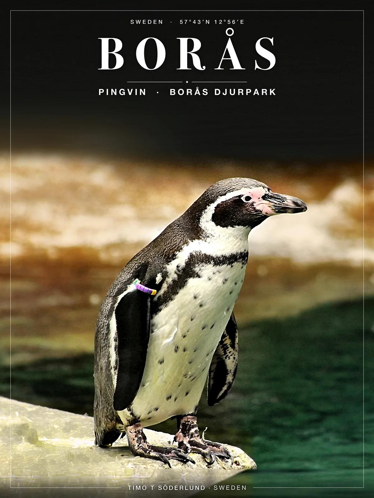

Pingvin · Borås Djurpark
Humboldt Penguin · Borås Djurpark, Borås, Sweden
English
Standing poised on coastal rock against dramatic dark water, a Humboldt penguin (Spheniscus humboldti) turns in crisp side profile at Borås Djurpark in Borås, Sweden. Sculpted in gallery-grade contrast and fine feather detail, this edition of Borås Poster Project 2026 by Timo T Söderlund brings wildlife portraiture to Boras, Sweden.
Svenska
I skarp sidoprofil på klippkanten mot djupt vatten står en humboldtpingvin (Spheniscus humboldti) i Borås Djurpark. Skulpterad med hög detaljskärpa i fjäderdräkten och lugn kontrast lyfter denna utgåva av Timo T. Söderlund fram djurporträttet i Borås Poster Project 2026.
Photographer & Edition: Timo T Söderlund · Borås, Sweden (2026)